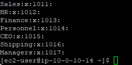
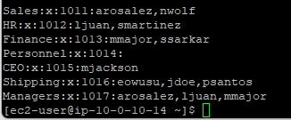
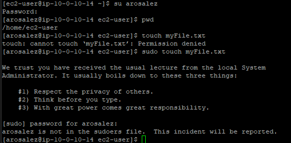
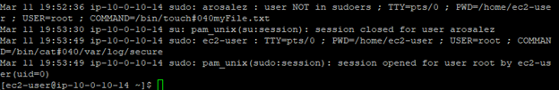

User Creation
Created 10 users with useradd and set their passwords
with passwd.
Create Linux users with default passwords, organize them into groups based on job roles, and test permissions by logging in as different users.
Connected via PuTTY (as described in Lab 225). Created 10 users with default passwords, organized them into 7 groups based on job roles, and tested permissions by switching users with su and attempting sudo commands.
Created 10 users with useradd and set their passwords
with passwd.
Created 7 groups and assigned users based on their job roles using
usermod -a -G.
Logged in as a non-sudo user and observed how unauthorized sudo
attempts are denied and logged.
Detailed record of each task performed during the lab.
pwd to confirm the current directory was
/home/ec2-user.
sudo useradd arosalez
and set the password with sudo passwd arosalez
using P@ssword1234!.sudo cat /etc/passwd | cut -d: -f1.
| First Name | Last Name | User ID | Job Role |
|---|---|---|---|
| Alejandro | Rosalez | arosalez | Sales Manager |
| Efua | Owusu | eowusu | Shipping |
| Jane | Doe | jdoe | Shipping |
| Li | Juan | ljuan | HR Manager |
| Mary | Major | mmajor | Finance Manager |
| Mateo | Jackson | mjackson | CEO |
| Nikki | Wolf | nwolf | Sales Representative |
| Paulo | Santos | psantos | Shipping |
| Sofia | Martinez | smartinez | HR Specialist |
| Saanvi | Sarkar | ssarkar | Finance Specialist |
P@ssword1234!. When typing the password, nothing
appears on screen, which is normal Linux behavior for password inputs.
sudo groupadd Sales
and verified it with cat /etc/group.HR, Finance,
Shipping, Managers, and CEO.

sudo usermod -a -G Sales arosalez
and repeated for all users according to the group assignments below.ec2-user to all groups.sudo cat /etc/group.| Group | Members |
|---|---|
| Sales | arosalez, nwolf |
| HR | ljuan, smartinez |
| Finance | mmajor, ssarkar |
| Shipping | eowusu, jdoe, psantos |
| Managers | arosalez, ljuan, mmajor |
| CEO | mjackson |
arosalez is in
both Sales and Managers because managers are personnel but not all personnel
are managers.

arosalez with su arosalez
and entered the password P@ssword1234!.pwd to confirm the current directory was still
/home/ec2-user.
touch myFile.txt, and received Permission denied
because arosalez cannot write to the ec2-user home folder.sudo touch myFile.txt, and received the message
"arosalez is not in the sudoers file. This incident will be reported."
exit to return to ec2-user.sudo cat /var/log/secure to view the security log.
Confirmed the unauthorized sudo attempt was logged with the user, command,
and timestamp.
Commands used in this lab for user and group management.
useraddCreates a new user account.
sudo useradd <username> : Create a user with default settingspasswdSets or changes a user's password.
sudo passwd <username> : Set the password for a specific usergroupaddCreates a new group.
sudo groupadd <group> : Create a groupusermodModifies a user account, including group memberships.
-a : Append the user to the group (don't remove from other groups)-G <group> : Specify the group to add the user tosuSwitches to another user account.
su <username> : Switch to the specified user (prompts for password)catDisplays the contents of a file.
cat /etc/passwd : View all user accountscat /etc/group : View all groups and their memberscat /var/log/secure : View the security/authentication logtouchCreates an empty file or updates the timestamp of an existing file.
useradd and set passwords
with passwd.groupadd and assign users
with usermod -a -G.sudo commands, and
attempts are logged in /var/log/secure./etc/passwd and /etc/group files store
user and group information respectively.This lab covered the fundamentals of user and group management in Linux. The key takeaway is the relationship between users, groups, and permissions: organizing users into groups simplifies access control, and the sudoers mechanism ensures only authorized users can perform administrative tasks.
The security logging in /var/log/secure demonstrates how Linux
tracks authentication events and unauthorized privilege escalation attempts.
This is essential for system auditing and troubleshooting access issues.